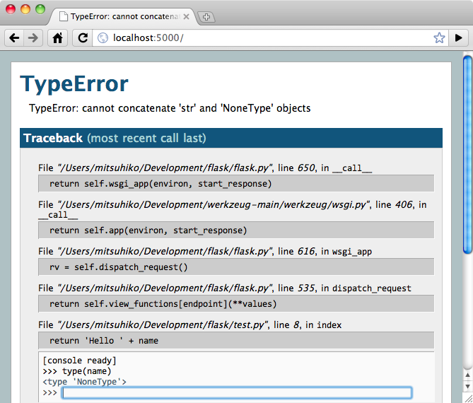

快速上手¶
等久了吧？本文会给你好好介绍如何上手 Flask 。这里假定你已经安装好了 Flask ， 否则请先阅读《 安装 》。
一个最小的应用¶
一个最小的 Flask 应用如下:
from flask import Flask
app = Flask(__name__)
@app.route('/')
def hello_world():
return 'Hello World!'
if __name__ == '__main__':
app.run()
把它保存为 hello.py 或其他类似名称并用你的 Python 解释器运行这个文件。请不要 使用 flask.py 作为应用名称，这会与 Flask 本身发生冲突。
$ python hello.py
* Running on http://127.0.0.1:5000/
现在，在浏览器中打开 http://127.0.0.1:5000/ ，就 可以看到问候页面了。
那么，这些代码是什么意思呢？
- 首先我们导入了
Flask类。这个类的实例将会成为我们的 WSGI 应用。 - 接着我们创建了这个类的实例。第一个参数是应用模块或者包的名称。如果你使用一个
单一模块（就像本例），那么应当使用 __name__ ，因为名称会根据这个模块是按
应用方式使用还是作为一个模块导入而发生变化（可能是
'__main__'，也可能是 实际导入的名称）。这个参数是必需的，这样 Flask 就可以知道在哪里找到模板和 静态文件等东西。更多内容详见Flask文档。 - 然后我们使用
route()装饰器来告诉 Flask 触发函数的 URL 。 - 函数名称可用于生成相关联的 URL ，并返回需要在用户浏览器中显示的信息。
- 最后，使用
run()函数来运行本地服务器和我们的应用。if __name__ == '__main__':确保服务器只会在使用 Python 解释器运行代码的 情况下运行，而不会在作为模块导入时运行。
按 control-C 可以停止服务器。
外部可见的服务器。
运行服务器后，会发现只有你自己的电脑可以使用服务，而网络中的其他电脑却不行。 缺省设置就是这样的，因为在调试模式下该应用的用户可以执行你电脑中的任意 Python 代码。
如果你关闭了 调试 或信任你网络中的用户，那么可以让服务器被公开访问。只要像
这样改变 run() 方法的调用:
app.run(host='0.0.0.0')
这行代码告诉你的操作系统监听一个公开的 IP 。
调试模式¶
虽然 run() 方法可以方便地启动一个本地开发服务器，但是每次
修改应用之后都需要手动重启服务器。这样不是很方便， Flask 可以做得更好。如果你
打开调试模式，那么服务器会在修改应用之后自动重启，并且当应用出错时还会提供一个
有用的调试器。
打开调试模式有两种方法，一种是在应用对象上设置标志:
app.debug = True
app.run()
另一种是作为参数传递给 run 方法:
app.run(debug=True)
两种方法的效果相同。
注意
虽然交互调试器不能在分布环境下工作（这使得它基本不可能用于生产环境），但是 它允许执行任意代码，这样会成为一个重大安全隐患。因此， 绝对不能在生产环境 中使用调试器 。
运行的调试器的截图：
想使用其他调试器？请参阅 使用调试器 。
路由¶
现代 web 应用都使用漂亮的 URL ，有助于人们记忆，对于使用网速较慢的移动设备尤其 有利。如果用户可以不通过点击首页而直达所需要的页面，那么这个网页会更得到用户的 青睐，提高回头率。
如前文所述， route() 装饰器用于把一个函数绑定到一个 URL 。
下面是一些基本的例子:
@app.route('/')
def index():
return 'Index Page'
@app.route('/hello')
def hello():
return 'Hello World'
但是能做的不仅仅是这些！你可以动态变化 URL 的某些部分，还可以为一个函数指定多个 规则。
变量规则¶
通过把 URL 的一部分标记为 <variable_name> 就可以在 URL 中添加变量。标记的
部分会作为关键字参数传递给函数。通过使用 <converter:variable_name> ，可以
选择性的加上一个转换器，为变量指定规则。请看下面的例子:
@app.route('/user/<username>')
def show_user_profile(username):
# show the user profile for that user
return 'User %s' % username
@app.route('/post/<int:post_id>')
def show_post(post_id):
# show the post with the given id, the id is an integer
return 'Post %d' % post_id
现有的转换器有：
| int | 接受整数 |
| float | 接受浮点数 |
| path | 和缺省情况相同，但也接受斜杠 |
唯一的 URL / 重定向行为
Flask 的 URL 规则都是基于 Werkzeug 的路由模块的。其背后的理念是保证漂亮的 外观和唯一的 URL 。这个理念来自于 Apache 和更早期的服务器。
假设有如下两条规则:
@app.route('/projects/')
def projects():
return 'The project page'
@app.route('/about')
def about():
return 'The about page'
它们看上去很相近，不同之处在于 URL 定义 中尾部的斜杠。第一个例子中 prjects 的 URL 是中规中举的，尾部有一个斜杠，看起来就如同一个文件夹。访问 一个没有斜杠结尾的 URL 时 Flask 会自动进行重定向，帮你在尾部加上一个斜杠。
但是在第二个例子中， URL 没有尾部斜杠，因此其行为表现与一个文件类似。如果 访问这个 URL 时添加了尾部斜杠就会得到一个 404 错误。
为什么这样做？因为这样可以在省略末尾斜杠时仍能继续相关的 URL 。这种重定向 行为与 Apache 和其他服务器一致。同时， URL 仍保持唯一，帮助搜索引擎不重复 索引同一页面。
URL 构建¶
如果可以匹配 URL ，那么 Flask 也可以生成 URL 吗？当然可以。
url_for() 函数就是用于构建指定函数的 URL 的。它把函数名称作为
第一个参数，其余参数对应 URL 中的变量。未知变量将添加到 URL 中作为查询参数。
例如：
>>> from flask import Flask, url_for
>>> app = Flask(__name__)
>>> @app.route('/')
... def index(): pass
...
>>> @app.route('/login')
... def login(): pass
...
>>> @app.route('/user/<username>')
... def profile(username): pass
...
>>> with app.test_request_context():
... print url_for('index')
... print url_for('login')
... print url_for('login', next='/')
... print url_for('profile', username='John Doe')
...
/
/login
/login?next=/
/user/John%20Doe
（例子中还使用下文要讲到的 test_request_context() 方法。这个
方法的作用是告诉 Flask 我们正在处理一个请求，而实际上也许我们正处在交互
Python shell 之中，并没有真正的请求。详见下面的 本地环境 ）。
为什么不在把 URL 写死在模板中，反而要动态构建？有三个很好的理由：
- 反向解析通常比硬编码 URL 更直观。同时，更重要的是你可以只在一个地方改变 URL ，而不用到处乱找。
- URL 创建会为你处理特殊字符的转义和 Unicode 数据，不用你操心。
- 如果你的应用是放在 URL 根路径之外的地方（如在
/myapplication中，不在/中），url_for()会为你妥善处理。
HTTP 方法¶
HTTP （ web 应用使用的协议）) 协议中有访问 URL 的不同方法。缺省情况下，一个路由 只回应 GET 请求，但是可以通过 methods 参数使用不同方法。例如:
@app.route('/login', methods=['GET', 'POST'])
def login():
if request.method == 'POST':
do_the_login()
else:
show_the_login_form()
如果当前使用的是 GET 方法，会自动添加 HEAD ，你不必亲自操刀。同时还会确保 HEAD 请求按照 HTTP RFC （说明 HTTP 协议的文档）的要求来处理，因此你可以 完全忽略这部分 HTTP 规范。与 Flask 0.6 一样， OPTIONS 自动为你处理好。
完全不懂 HTTP 方法？没关系，这里给你速成培训一下：
HTTP 方法（通常也被称为“动作”）告诉服务器一个页面请求要 做 什么。以下是常见 的方法：
- GET
- 浏览器告诉服务器只要 得到 页面上的信息并发送这些信息。这可能是最常见的 方法。
- HEAD
- 浏览器告诉服务器想要得到信息，但是只要得到 信息头 就行了，页面内容不要。 一个应用应该像接受到一个 GET 请求一样运行，但是不传递实际的内容。在 Flask 中，你根本不必理会这个，下层的 Werkzeug 库会为你处理好。
- POST
- 浏览器告诉服务器想要向 URL 发表 一些新的信息，服务器必须确保数据被保存好 且只保存了一次。 HTML 表单实际上就是使用这个访求向服务器传送数据的。
- PUT
- 与 POST 方法类似，不同的是服务器可能触发多次储存过程而把旧的值覆盖掉。你 可能会问这样做有什么用？这样做是有原因的。假设在传输过程中连接丢失的情况 下，一个处于浏览器和服务器之间的系统可以在不中断的情况下安全地接收第二次 请求。在这种情况下，使用 POST 方法就无法做到了，因为它只被触发一次。
- DELETE
- 删除给定位置的信息。
- OPTIONS
- 为客户端提供一个查询 URL 支持哪些方法的捷径。从 Flask 0.6 开始，自动为你 实现了这个方法。
有趣的是在 HTML4 和 XHTML1 中，表单只能使用 GET 和 POST 方法。但是 JavaScript 和未来的 HTML 标准中可以使用其他的方法。此外， HTTP 近来已经变得相当 流行，浏览器不再只是唯一使用 HTTP 的客户端。比如许多版本控制系统也使用 HTTP 。
静态文件¶
动态的 web 应用也需要静态文件，一般是 CSS 和 JavaScript 文件。理想情况下你的 服务器已经配置好了为你的提供静态文件的服务。在开发过程中， Flask 也能做好这个 工作。只要在你的包或模块旁边创建一个名为 static 的文件夹就行了。静态文件位于 应用的 /static 中。
使用选定的 'static' 端点就可以生成相应的 URL 。:
url_for('static', filename='style.css')
这个静态文件在文件系统中的位置应该是 static/style.css 。
渲染模板¶
在 Python 内部生成 HTML 不好玩，且相当笨拙。因为你必须自己负责 HTML 转义，以 确保应用的安全。因此， Flask 自动为你配置的 Jinja2 模板引擎。
使用 render_template() 方法可以渲染模板，你只要提供模板名称和需要
作为参数传递给模板的变量就行了。下面是一个简单的模板渲染例子:
from flask import render_template
@app.route('/hello/')
@app.route('/hello/<name>')
def hello(name=None):
return render_template('hello.html', name=name)
Flask 会在 templates 文件夹内寻找模板。因此，如果你的应用是一个模块，那么模板 文件夹应该在模块旁边；如果是一个包，那么就应该在包里面：
情形 1: 一个模块:
/application.py
/templates
/hello.html
情形 2: 一个包:
/application
/__init__.py
/templates
/hello.html
你可以充分使用 Jinja2 模板引擎的威力。更多内容，详见官方 Jinja2 模板文档 。
模板举例：
<!doctype html>
<title>Hello from Flask</title>
{% if name %}
<h1>Hello {{ name }}!</h1>
{% else %}
<h1>Hello World!</h1>
{% endif %}
在模板内部你也可以访问 request 、session 和
g [1] 对象，以及 get_flashed_messages() 函数。
模板在继承使用的情况下尤其有用，其工作原理 模板继承 方案 文档。简单的说，模板继承可以使每个页面的特定元素（如页头，导航，页尾）保持 一致。
自动转义默认开启。因此，如果 name 包含 HTML ，那么会被自动转义。如果你可以
信任某个变量，且知道它是安全的 HTML （例如变量来自一个把 wiki 标记转换为 HTML
的模块），那么可以使用 Markup 类把它标记为安全的。否则请在模板
中使用 |safe 过滤器。更多例子参见 Jinja 2 文档。
下面简单介绍一下 Markup 类的工作方式：
>>> from flask import Markup
>>> Markup('<strong>Hello %s!</strong>') % '<blink>hacker</blink>'
Markup(u'<strong>Hello <blink>hacker</blink>!</strong>')
>>> Markup.escape('<blink>hacker</blink>')
Markup(u'<blink>hacker</blink>')
>>> Markup('<em>Marked up</em> » HTML').striptags()
u'Marked up \xbb HTML'
在 0.5 版更改: 自动转义不再为所有模板开启，只为扩展名为 .html 、 .htm 、
.xml 和 .xhtml 开启。从字符串载入的模板将关闭自动转义。
| [1] | 不理解什么是 g 对象？它是某个可以根据需要储存信息的
东西。更多信息参见 g 对象的文档和 在 Flask 中使用 SQLite 3 文档。 |
操作请求数据¶
对于 web 应用来说对客户端向服务器发送的数据作出响应很重要。在 Flask 中由全局
对象 request 来提供请求信息。如果你有一些 Python 基础，那么可能
会奇怪：既然这个对象是全局的，怎么还能保持线程安全？答案是本地环境：
本地环境¶
内部信息
如果你想了解其工作原理和如何测试，请阅读本节，否则可以跳过本节。
某些对象在 Flask 中是全局对象，但是不是通常意义下的全局对象。这些对象实际上是 特定环境下本地对象的代理。真拗口！但还是很容易理解的。
设想现在处于处理线程的环境中。一个请求进来了，服务器决定生成一个新线程（或者 叫其他什么名称的东西，这个下层的东西能够处理包括线程在内的并发系统）。当 Flask 开始其内部请求处理时会把当前线程作为活动环境，并把当前应用和 WSGI 环境 绑定到这个环境（线程）。它以一种聪明的方式使得一个应用可以在不中断的情况下 调用另一个应用。
这对你有什么用？基本上你可以完全不必理会。这个只有在做单元测试时才有用。在测试
时会遇到由于没有请求对象而导致依赖于请求的代码会突然崩溃的情况。对策是自己创建
一个请求对象并绑定到环境。最简单的单元测试解决方案是使用
test_request_context() 环境管理器。通过使用 with 语句可以
绑定一个测试请求，以便于交互。例如:
from flask import request
with app.test_request_context('/hello', method='POST'):
# now you can do something with the request until the
# end of the with block, such as basic assertions:
assert request.path == '/hello'
assert request.method == 'POST'
另一种方式是把整个 WSGI 环境传递给 request_context() 方法:
from flask import request
with app.request_context(environ):
assert request.method == 'POST'
请求对象¶
请求对象在 API 一节中有详细说明这里不细谈（参见 request ）。
这里简略地谈一下最常见的操作。首先，你必须从 flask 模块导入请求对象:
from flask import request
通过使用 method 属性可以操作当前请求方法，通过使用
form 属性处理表单数据。以下是使用两个属性的例子:
@app.route('/login', methods=['POST', 'GET'])
def login():
error = None
if request.method == 'POST':
if valid_login(request.form['username'],
request.form['password']):
return log_the_user_in(request.form['username'])
else:
error = 'Invalid username/password'
# 如果请求访求是 GET 或验证未通过就会执行下面的代码
return render_template('login.html', error=error)
当 form 属性中不存在这个键时会发生什么？会引发一个 KeyError 。如果你不
像捕捉一个标准错误一样捕捉 KeyError ，那么会显示一个 HTTP 400 Bad
Request 错误页面。因此，多数情况下你不必处理这个问题。
要操作 URL （如 ?key=value ）中提交的参数可以使用
args 属性:
searchword = request.args.get('key', '')
用户可能会改变 URL 导致出现一个 400 请求出错页面，这样降低了用户友好度。因此， 我们推荐使用 get 或通过捕捉 KeyError 来访问 URL 参数。
完整的请求对象方法和属性参见 request 文档。
文件上传¶
用 Flask 处理文件上传很容易，只要确保不要忘记在你的 HTML 表单中设置
enctype="multipart/form-data" 属性就可以了。否则浏览器将不会传送你的文件。
已上传的文件被储存在内存或文件系统的临时位置。你可以通过请求对象
files 属性来访问上传的文件。每个上传的文件都储存在这个
字典型属性中。这个属性基本和标准 Python file 对象一样，另外多出一个
用于把上传文件保存到服务器的文件系统中的
save() 方法。下例展示其如何运作:
from flask import request
@app.route('/upload', methods=['GET', 'POST'])
def upload_file():
if request.method == 'POST':
f = request.files['the_file']
f.save('/var/www/uploads/uploaded_file.txt')
...
如果想要知道文件上传之前其在客户端系统中的名称，可以使用
filename 属性。但是请牢记这个值是
可以伪造的，永远不要信任这个值。如果想要把客户端的文件名作为服务器上的文件名，
可以通过 Werkzeug 提供的 secure_filename() 函数:
from flask import request
from werkzeug import secure_filename
@app.route('/upload', methods=['GET', 'POST'])
def upload_file():
if request.method == 'POST':
f = request.files['the_file']
f.save('/var/www/uploads/' + secure_filename(f.filename))
...
更好的例子参见 上传文件 方案。
Cookies¶
要访问 cookies ，可以使用 cookies 属性。可以使用请求对象
的 set_cookie 方法来设置 cookies 。请求对象的
cookies 属性是一个包含了客户端传输的所有 cookies 的字典。
在 Flask 中，如果能够使用 会话 ，那么就不要直接使用 cookies ，因为
会话比较安全一些。
读取 cookies:
from flask import request
@app.route('/')
def index():
username = request.cookies.get('username')
# 使用 cookies.get(key) 来代替 cookies[key] ，
# 以避免当 cookie 不存在时引发 KeyError 。
储存 cookies:
from flask import make_response
@app.route('/')
def index():
resp = make_response(render_template(...))
resp.set_cookie('username', 'the username')
return resp
注意， cookies 设置在响应对象上。通常只是从视图函数返回字符串， Flask 会把它们
转换为响应对象。如果你想显式地转换，那么可以使用 make_response()
函数，然后再修改它。
使用 延迟的请求回调 方案可以在没有响应对象的情况下设置一个 cookie 。
同时可以参见 关于响应 。
重定向和错误¶
使用 redirect() 函数可以重定向。使用 abort() 可以更早
退出请求，并返回错误代码:
from flask import abort, redirect, url_for
@app.route('/')
def index():
return redirect(url_for('login'))
@app.route('/login')
def login():
abort(401)
this_is_never_executed()
上例实际上是没有意义的，它让一个用户从索引页重定向到一个无法访问的页面（401 表示禁止访问）。但是上例可以说明重定向和出错跳出是如何工作的。
缺省情况下每种出错代码都会对应显示一个黑白的出错页面。使用
errorhandler() 装饰器可以定制出错页面:
from flask import render_template
@app.errorhandler(404)
def page_not_found(error):
return render_template('page_not_found.html'), 404
注意 render_template() 后面的 404 ，这表示页面对就的出错代码是
404 ，即页面不存在。缺省情况下 200 表示一切正常。
关于响应¶
视图函数的返回值会自动转换为一个响应对象。如果返回值是一个字符串，那么会被转换
为一个包含作为响应体的字符串、一个 200 OK 出错代码 和一个 text/html
MIME 类型的响应对象。以下是转换的规则：
- 如果视图要返回的是一个响应对象，那么就直接返回它。
- 如果要返回的是一个字符串，那么根据这个字符串和缺省参数生成一个用于返回的 响应对象。
- 如果要返回的是一个元组，那么元组中的项目可以提供额外的信息。元组中必须至少
包含一个项目，且项目应当由
(response, status, headers)组成。 status 的值会重载状态代码， headers 是一个由额外头部值组成的列表或字典。 - 如果以上都不是，那么 Flask 会假定返回值是一个有效的 WSGI 应用并把它转换为 一个响应对象。
如果想要在视图内部掌控响应对象的结果，那么可以使用
make_response() 函数。
设想有如下视图：
@app.errorhandler(404)
def not_found(error):
return render_template('error.html'), 404
可以使用 make_response() 包裹返回表达式，获得响应对象，并对该对象
进行修改，然后再返回：
@app.errorhandler(404)
def not_found(error):
resp = make_response(render_template('error.html'), 404)
resp.headers['X-Something'] = 'A value'
return resp
会话¶
除了请求对象之外还有一种称为 session 的对象，允许你在不同请求
之间储存信息。这个对象相当于用密钥签名加密的 cookie ，即用户可以查看你的
cookie ，但是如果没有密钥就无法修改它。
使用会话之前你必须设置一个密钥。举例说明:
from flask import Flask, session, redirect, url_for, escape, request
app = Flask(__name__)
@app.route('/')
def index():
if 'username' in session:
return 'Logged in as %s' % escape(session['username'])
return 'You are not logged in'
@app.route('/login', methods=['GET', 'POST'])
def login():
if request.method == 'POST':
session['username'] = request.form['username']
return redirect(url_for('index'))
return '''
<form action="" method="post">
<p><input type=text name=username>
<p><input type=submit value=Login>
</form>
'''
@app.route('/logout')
def logout():
# 如果会话中有用户名就删除它。
session.pop('username', None)
return redirect(url_for('index'))
# 设置密钥，复杂一点：
app.secret_key = 'A0Zr98j/3yX R~XHH!jmN]LWX/,?RT'
这里用到的 escape() 是用来转义的。如果不使用模板引擎就可以像上例
一样使用这个函数来转义。
如何生成一个好的密钥
生成随机数的关键在于一个好的随机种子，困此一个好的密钥应当有足够的随机性。 你的操作系统可以使用一个随机生成器来生成一个好的随机种子：
>>> import os
>>> os.urandom(24)
'\xfd{H\xe5<\x95\xf9\xe3\x96.5\xd1\x01O<!\xd5\xa2\xa0\x9fR"\xa1\xa8'
只要复制这个随机种子到你的代码中就行了。
基于 cookie 的会话的说明： Flask 会把会话对象中的值储存在 cookie 中。在打开 cookie 的情况下，如果你访问会话对象中没有的值，那么会得到模糊的错误信息：请检查 页面 cookie 的大小是否与网络浏览器所支持的大小一致。
消息闪现¶
一个好的应用和用户接口都有良好的反馈，否则到后来用户就会讨厌这个应用。 Flask 通过闪现系统来提供了一个易用的反馈方式。闪现系统的基本工作原理是在请求结束时 记录一个消息，提供且只提供给下一个请求使用。通常通过一个布局模板来展现闪现的 消息。
flash() 用于闪现一个消息。在模板中，使用
get_flashed_messages() 来操作消息。完整的例子参见
消息闪现 。
日志¶
0.3 新版功能.
有时候可能会遇到数据出错需要纠正的情况。例如因为用户篡改了数据或客户端代码出错
而导致一个客户端代码向服务器发送了明显错误的 HTTP 请求。多数时候在类似情况下
返回 400 Bad Request 就没事了，但也有不会返回的时候，而代码还得继续运行
下去。
这时候就需要使用日志来记录这些不正常的东西了。自从 Flask 0.3 后就已经为你配置好 了一个日志工具。
以下是一些日志调用示例:
app.logger.debug('A value for debugging')
app.logger.warning('A warning occurred (%d apples)', 42)
app.logger.error('An error occurred')
logger 是一个标准的 Python Logger 类，
更多信息详见官方的 logging 文档 。
集成 WSGI 中间件¶
如果想要在应用中添加一个 WSGI 中间件，那么可以包装内部的 WSGI 应用。假设为了 解决 lighttpd 的错误，你要使用一个来自 Werkzeug 包的中间件，那么可以这样做:
from werkzeug.contrib.fixers import LighttpdCGIRootFix
app.wsgi_app = LighttpdCGIRootFix(app.wsgi_app)